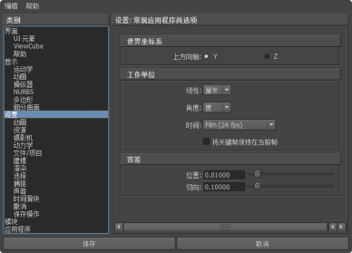

并在“文件类型”(File Type)菜单中选择“FBX”时，系统会显示 FBX 导入的“文件类型特定选项”(File type specific options)。这些选项可用于选择在 Maya 中使用 Maya FBX 插件打开 FBX 文件时，该文件随附提供的内容。有关常规导入选项的信息，请参见导入选项。
并在“文件类型”(File Type)菜单中选择“FBX”时，系统会显示 FBX 导入的“文件类型特定选项”(File type specific options)。这些选项可用于选择在 Maya 中使用 Maya FBX 插件打开 FBX 文件时，该文件随附提供的内容。有关常规导入选项的信息，请参见导入选项。
若要查看 FBX 的“文件类型特定选项”(File Type Specific options)，请执行以下操作：
- 选择，然后从“文件类型”(File Type)下拉列表中选择“FBX 导入”(FBX Import)或“FBX_DAE 导入”(FBX_DAE Import)。
预设(Presets)
- Autodesk Media & Entertainment
- 由于“Autodesk Media & Entertainment”预设包含了可用于大多数动画工作流的最佳设置，因此该预设包含了大部分的选项。在 UI 中您可以看到所有可用的选项，因此可以对它们进行访问和自定义。
- Autodesk MotionBuilder
- 如果要使用“Maya 到 MotionBuilder，再返回到 Maya”工作流，请使用“Autodesk MotionBuilder”预设。此预设使用“约束”(Constraints)和“骨架定义”(Skeleton Definitions)选项，这些选项是为使用 Maya 和 MotionBuilder 来实现最佳角色动画而设置的。
- 用户定义(User Defined)
- 只要修改与默认预设不同的设置，就会显示“用户定义”(User Defined)预设标签。
- 编辑预设(Editing presets)
- 如果更改预设，则预设字段将显示“用户定义”(User defined)，以表示该预设与其默认状态不同。您可以在临时文件中找到这些“用户定义”状态，在下次使用插件时，这些设置将成为默认设置。
- 也可以将您的设置保存为自定义预设。请参见创建自定义预设。
统计信息(Statistics)
通过“统计信息”(Statistics)窗口，您可以查看有关传入 (FBX) 文件和系统（应用程序）设置的相关 Meta 信息。具体信息会因文件内容的不同而有所差异。例如，您可以使用“统计信息”部分确定创建文件的时间、上方向轴朝向的方向、使用的文件单位和帧速率。
- 有时统计信息隐藏在窗口边的下方；使用滚动条可查看。
- 如果 FPS（帧速率）不是一个标准速率（24、25、30、48、50、60、100、120 fps），则不显示。例如，如果某 FBX 文件使用的帧速率为 8 帧/秒，则该文件不会显示在导入器统计信息中。如果 FBX 文件与其主机应用程序之间的帧速率不匹配，将在“系统帧速率”(System Frame Rate)值旁显示警告。如果帧速率不是标准速率，导入器将在“系统帧速率”旁边不显示警告。
包含(Include)
- 文件内容(File Content)
- 使用“文件内容”(File Content)菜单，可选择将文件内容导入到主机应用程序的方式。从下列三个选项中选择：
-
- 添加(Add)
- 该选项用于将 FBX 文件内容添加到场景。如果主机应用程序中存在元素，则这些元素将被复制，因此使用此选项可以将不存在的元素添加到场景中。
提示： 如果要将多个角色从 3ds Max 导入游戏引擎，请选择此选项。否则，会发生命名冲突，导致角色的根关节合并在一起。导出到游戏引擎时，必须移除任何名称空间。有关详细信息，请参见 FBX 插件重命名策略。
- 添加并更新动画(Add and update animation)
- 此选项用于添加新内容，并根据您的文件更新动画以匹配场景中的对象。
- 例如，如果 FBX 文件中任一对象上设置了动画且该对象名称与目标应用程序中的某对象相同，将替换该动画。如果该对象具有相同的名称，但没有设置动画，将添加新动画。
- 这是“Media & Entertainment”和“MotionBuilder”预设的默认选项。
- 更新动画(Update animation)
- 该选项用于将 FBX 文件内容添加到场景，但仅更新现有动画；文件中未存在于场景中的任何对象将被忽略。
- 添加并更新动画(Add and update animation)
- 此选项用于添加新内容，并根据您的文件更新动画以匹配场景中的对象。
- 例如，如果 FBX 文件中任一对象上设置了动画且该对象名称与目标应用程序中的某对象相同，将替换该动画。如果该对象具有相同的名称，但没有设置动画，将添加新动画。
- 这是“Media & Entertainment”和“MotionBuilder”预设的默认选项。
- 更新动画(已设置关键帧的变换)(Update animation (keyed transforms))
- 使用此选项可以避免现有场景元素上现有的未设置关键帧的变换被覆盖，并使其保留当前状态。通过此新选项，只有已导入文件中的已设置关键帧的动画，才会更新场景中打开元素上的变换。
警告： 如果要以独占方式合并包含动画数据的层次，则未设置关键帧的导入变换完全同名时，将忽略新动画。如果完全同名的变换具有关键帧，则保持现有的导入行为。
如果“FBX 导入 > 包含”(FBX Import > Include)选项中缺少此选项，请参见 UI 中的“更新动画(已设置关键帧的变换)”(Update animation (keyed transforms))选项位于何处？或使用编制导入模式的脚本以合并已设置关键帧的变换脚本。
- 几何体(Geometry)
- 展开“几何体”(Geometry)卷展栏可以访问与向场景中导入几何体相关的选项。
-
- 平滑组(Smoothing Groups)
- 激活此选项可随文件一起导入平滑组。
-
注：
除非在导出时激活包括 > 几何体(Include > Geometry)部分中的“平滑组”(Smoothing Groups)选项，并在导入时激活此“平滑组”(Smoothing Groups)选项，否则，具有平滑边法线的 FBX 多边形对象重新导入 Maya 时会出现不正确的法线信息。
- 解除锁定法线(Unlock Normals)
- 激活此选项可解除锁定几何体的法线并强制 Maya 重新计算边的连续性。
注：
- 对于导入到 Maya 中的所有变形的几何体，将自动解除锁定法线。
- 如果在导入后应用变形器，锁定的法线可能会对几何体带来着色问题。解除锁定几何体的法线可以解决此问题。
- 逐顶点合并法线(Combine per-vertex Normals)
- 激活此选项可以组合几何体顶点法线。
- 此选项的一个常用用途是还原“FBX 导出”(FBX Export)窗口的“逐顶点分割法线”(Split per-vertex Normals)选项。有关此工作流的详细信息，请参见 FBX 输出选项中的逐顶点分割法线。
- 使用“FBX 导入器”(FBX Importer)中的“逐顶点合并法线”(Combine per-vertex Normals)选项时，Maya FBX 插件将执行“FBX 导出”(FBX Export)窗口中“逐顶点分割法线”(Split per-vertex Normals)选项的相反操作。这样可能会导致错误的 UV 纹理贴图（请参见下面的注意事项）。
- 如果使用的不是合并回工作流（将 FBX 合并到现有场景），此选项可能会导致将 FBX 文件重新导入到 Maya 中时生成错误的 UV 贴图。将您的 FBX 文件导入到原始 Maya 场景，以避免分割几何体存在几何体 UV 问题。
注： 使用此选项可以永久改变应用于几何体的任何 UV 贴图。插件会正确地将 UV 重新指定给新分割的几何体。UV 存在这样的限制：将该几何体导入到空 Maya 场景并使用“FBX 导入器”(FBX Importer)中的“逐顶点合并法线”(Combine per-vertex Normals)选项时可能会导致错误的 UV 指定。
- 动画(Animation)
- 展开该卷展栏并激活此选项可导入在场景中找到的动画。
-
- 附加选项(Extra Options)
- 展开此部分可查看其他导入选项。
- 动画录制(Animation Take)
- 显示 FBX 文件中当前的动画录制。
- 如果文件中不存在动画录制，在该字段将显示“无动画”(No animation)消息。
- 如果文件中存在多个动画应用，则字段中将显示当前选定的应用。
您可以从菜单中选择其他录制来更改选定的动画录制。Maya FBX 插件中列出了文件中包含的所有可用动画录制。
注： 每次您只能选择和导入单个动画应用。 - 填充时间轴(Fill Timeline)
- 当您要按照传入 FBX 文件中的动画范围更新应用程序时间轴时，请激活此选项。“动画范围”指文件中所包含动画的第一个和最后一个关键帧。
- 烘焙动画层(Bake Animation Layers)
- 当“烘焙动画层”(Bake Animation Layers)选项处于活动状态时，插件会将所有层收拢到基础层。如果禁用“烘焙动画层”(Bake Animation Layers option)选项，则 FBX 文件中的所有层都会被导入。
- 视觉标记(Optical Markers)
- 激活此选项可在导入时将文件中所包含的视觉标记转化为虚拟对象。
- 如果禁用此选项，则导入过程将忽略此数据。
- 视觉标记通常来自运动捕捉数据，表现为一片动画点或标记。由于数据类型不兼容，因此 Maya FBX 插件不会导入动画。但是，在 Maya 中，Maya FBX 插件会将视觉数据转化为一组静态 Null 对象。
提示： 如果视觉数据源自 MotionBuilder，可在 MotionBuilder 中将所有的视觉标记状态都设置为“完成”(Done)，以便将动画数据作为曲线导入 Maya。
- 如果需要导入存储在 FBX 文件中的视觉数据，此选项非常有用。例如，如果您要发送包含视觉数据的 FBX 文件，某人需要在 Maya 中使用相应数据，但不使用 MotionBuilder，则您可以激活此选项以使用 FBX 文件格式存储视觉数据。
- 四元数插值模式(Quaternion Interpolation Mode)
- 使用此选项可以将四元数插值转化为 Euler 曲线并对其重采样，以确保互操作性。
重采样为 Euler 插值(Resample as Euler interpolation) 这是四元数插值的默认转化设置。
此选项将对四元数插值重采样并转化为 Euler 曲线，以确保互操作性。
保留四元数插值(Retain Quaternion Interpolation) 此选项将在导入过程中保留四元数插值类型。 提示：在导入具有四元数插值的动画时，使用此选项。此选项仅与支持此插值类型的应用程序（如 Autodesk MotionBuilder）相兼容。此外，由于四元数解算在 Maya 与 MotionBuilder 中不同，因此生成的动画也不相同。使用默认选项（“重采样为 Euler 插值”(Resample as Euler interpolation)）可获得与 MotionBuilder 或其他应用程序中的动画相同的视觉效果。
设置为 Euler 插值(Set as Euler Interpolation) 通过此选项，可以将四元数关键帧的插值类型更改为 Euler 类型，而无需重采样动画曲线本身。 提示：使用此选项可产生相同数目的关键帧，并设置为 Euler 类型。由于现在是作为 Euler 插值解算，视觉效果将有所不同。使用默认选项（“重采样为 Euler 插值”(Resample as Euler interpolation)）可获得与 MotionBuilder 或其他应用程序中的动画相同的视觉效果。
- 保护受驱动关键帧(Protect Driven Keys)
- 激活此选项可以防止任何传入动画覆盖具有受驱动关键帧的通道。Maya 具有特殊的受驱动关键帧，它将一个属性值链接到另一个对象属性。这些关键帧是 Maya 专有的，不受 FBX 支持。如果此选项处于活动状态，Maya FBX 插件会阻止对使用受驱动关键帧的属性断开连接或进行覆盖。
- 如果此选项处于活动状态，受驱动关键帧将受到保护，不对受驱动通道应用传入动画。
- 如果此选项处于非活动状态，受驱动关键帧将被丢弃，传入动画将应用于受驱动通道。
- 将元素变形为关节(Deforming Elements to Joints)
- 激活此选项可以将变形元素转化为 Maya 关节。最初提供该选项的原因是 Maya 不在关节链内支持定位器元素（即，变换不是关节的节点）。
- 如果此选项处于不活动状态，用于变形的、非关节的所有元素将转化为定位器。
- 从 Null 元素更新枢轴(Update Pivots from Nulls)
- 仅当导入较旧版本（MotionBuilder 5.5 之前的版本）的包含动画关节层次（例如动画角色）的 FBX 文件时，才激活该选项。
- 通过该选项，您可以将层次中用作前期旋转和后期旋转的 null（或关节）元素的旋转变换指定为原始节点的关节方向和旋转轴。
- 之后，删除前期旋转和后期旋转节点。使用“将前期/后期旋转导出为 null 元素”(Export Pre/Post Rotation as Nulls)选项创建的较旧版本的文件将合并回原始 Maya 设置。
- 几何体缓存文件(Geometry Cache File(s))
-
激活此选项可在 FBX 导入期间导入由 FBX 导出的几何缓存数据。
当您使用 FBX 导出几何体缓存文件时，Maya FBX 插件会生成以下三个文件：
- FBX 文件
- XML 文件
- MCX 文件
插件会将 XML 和 MCX 文件存储在以 FBX 文件命名的子文件夹中，且后缀为 FPC (_fpc)。
例如，如果将包含名为 pCube1 的立方体的场景导出到 FBX 文件 myTest.fbx 中，则会创建以下文件：
- myTest.fbx
- myTest_fpc
- pCubeShape1.xml
- pCubeShape1.mcx
- 动画(Animation)
- 变形模型(Deformed Models)
- 激活“变形模型”(Deformed Models)选项可导入“蒙皮”和“融合变形”变形。
- 通过展开“变形模型”(Deformed Models)访问各个选项，可以明确地选择导入“蒙皮”(Skins)和“融合变形”(Blend Shapes)。您也可以选择预归一化权重。预归一化权重可归一化蒙皮变形的权重分配，以便平滑蒙皮权重加起来是一。
-
- 蒙皮(Skins)
- 激活此选项可将所有蒙皮变形导入到场景中。
- 融合变形(Blend Shapes)
- 激活此选项可将所有几何体融合变形导入到场景中。
- 预归一化权重(Pre-Normalize Weights)
- 激活此选项可归一化权重分配。
- 在导入过程中，Maya FBX 插件可以预归一化权重，以确保蒙皮网格上每个顶点的权重总和达到 1.0。可以有许多影响单个顶点的关节，但是，每个变形关节的百分比总和始终等于 1.0。
- 如果导入旧版的 FBX 文件时，发生异常网格变形，请使用该功能。
- 约束(Constraints)
- 激活此选项可确保将 FBX 文件中包含的某些受支持的约束导入到 Maya 中。如果此选项未处于活动状态，将不会导入任何支持的约束。
FBX 支持的约束包括：
- 点(Point)
- 目标(Aim)
- 方向(Orient)
- 父对象(Parent)
- IK 控制柄(IK handle)（包括“极向量”(Pole Vector)）
-
- 骨架定义(Skeleton Definitions)
- 选择要在导出时在文件中包含的骨架定义（FBIK/HumanIK/无(None)）。如果要转移到也支持角色的 MotionBuilder，这将非常有用。
- 摄影机(Cameras)
- 激活此选项可导入文件中包含的所有摄影机。此插件导入摄影机设置但不会渲染设置。这样可以更改渲染结果，具体取决于在比较中所使用的源应用程序。有关渲染设置限制的详细信息，请参见 FBX 疑难解答中的为何摄影机不一致？。
- 插件会将摄影机以 FBX 类型保存在 FBX 文件中，以保证互操作性。这就意味着它们必须在导入时转化为 Maya 摄影机类型。
- 灯光(Lights)
- 激活此选项可导入文件中包含的所有灯光。Maya FBX 插件可以导出并转化灯光类型以确保 FBX 的互操作性。
- FBX 支持 Autodesk 3ds Max、Autodesk MotionBuilder 和 其他 Autodesk 应用程序中的“标准点光”(Standard Point)、“聚光灯”(Spot)和“平行光”(Directional)类型。
- 音频(Audio)
- 激活此选项可导入文件中包含的所有音频。
高级选项(Advanced options)
- 单位(Units)
- 通过“单位”(Units)选项，您可以查看插件所用的转化因子（缩放值），还可以修改转化单位。
此选项可自动指定、设置和转化传入文件的单位以匹配主应用程序的单位。
如果激活了该选项，但文件单位与系统单位匹配，则无需进行比例转化且插件不会应用任何转化。在这种情况下显示的“比例因子”(Scale Factor)为 1.0。注： 这种转化仅影响传入数据，而不会更改 Maya 中的设置。 - 比例因子(Scale Factor)
- 显示插件应用于整个传入场景的转化值或“比例因子”(Scale Factor)。
- Maya FBX 插件将用于主机应用程序的单位与用于导入文件的单位进行比较，以便确定“比例因子”(Scale Factor)值。然后插件会建议匹配主应用程序中系统单位的单位转化。显示的“比例因子”(Scale Factor)是计算的结果。
- 例如，如果将一个场景从使用厘米作为工作单位的软件导入到一个使用英尺作为单位的软件，“比例因子”(Scale Factor)将为 2.54。始终启用此选项，但如果文件单位与系统单位匹配，插件便无需应用比例转化。未应用任何转化。在这种情况下显示的“比例因子”(Scale Factor)为 1.0。
注： 如果更改“文件单位转化为:”(File Units Converted to:)选项，则可以修改应用于传入数据的“比例因子”(Scale Factor)值。
- 自动(Automatic)
- 如果希望 Maya FBX 插件自动识别、设置并转化传入文件的单位以与主机应用程序的单位匹配，请激活“自动”(Automatic)选项。
- 激活“自动”(Automatic)后，“场景单位转化为”(Scene units converted to)选项将禁用，虽然该选项会显示已解析的单位和比例因子。禁用“自动”(Automatic)选项后，即可访问“场景单位转化为”(Scene units converted to)选项。如果激活“自动”(Automatic)，但文件单位与系统单位匹配，则无需进行比例转化且插件不会应用任何转化。在这种情况下显示的“比例因子”(Scale Factor)为 1.0。
注： 这种转化仅影响传入数据，而不会更改 Maya 中的设置。
- 文件单位转化为(File Units converted to)
- 使用此菜单可指定文件转化时使用的单位。直接修改此设置会影响应用于传入数据的“比例因子”(Scale Factor)值。Maya FBX 插件将检查 Maya“首选项”(Preferences)窗口中的“设置”(Settings)/“工作单位”(Working Units)。

- 显示的“比例因子”(Scale Factor)使用此单位设置进行计算。这种自动行为可确保插件考虑单位，并默认应用正确的比例。
注： 请确认 Maya 场景所用的“系统单位”(System Units)，以便控制 Maya FBX 插件是否需要缩放场景。
- 如果导入的文件与 Maya 场景的工作单位使用相同的单位设置，则说明单位匹配，且插件中的“比例因子”(Scale Factor)显示为“1.0”。不会应用任何比例转化。
- 如果单位不匹配且您的 Maya 场景为空，并且/或者未考虑更改系统单位，则请在开始导入之前更改 Maya 的系统单位以便匹配传入文件中使用的文件单位。这样做之后，单位即会匹配，“比例因子”(Scale Factor)为“1.0”，并且不应用任何比例转化。
- 例如，如果将厘米形式的文件导入到设置为英寸的 Maya 场景中，则“比例因子”(Scale Factor)为 0.3937008。在这种情况下，传入数据将缩小以匹配场景的单位制。
注： 如果“比例因子”(Scale Factor)为 1.0，则不会应用缩放。如果“比例因子”(Scale Factor)大于 1.0，则传入数据将按比例放大。如果比例因子小于 1.0，则传入数据将按比例缩小。
- 在上例中，如果不想更改 Maya 场景的系统单位，并且不希望插件缩放传入数据，则还可以选择：
- 更改“文件单位转化为”(File Units Converted To)选项以匹配文件单位。即使文件单位与 Maya 系统单位之间不匹配，这也会使“比例因子”(Scale Factor)为“1.0”，不应用缩放。
- UI
- 这些选项用于设置 UI 的显示选项。这样您可以显示或隐藏“警告管理器”(Warning Manager)。
- 可以自定义这些显示选项，将它们保存为新的预设，然后共享这些预设文件。有关详细信息，请参见 FBX 导入选项主题中的“编辑预设”部分。
-
- 显示/隐藏警告管理器(Show/Hide Warning Manager)
- 通过该选项，您可以禁用在导入过程中显示的“警告和错误”(Warnings and Errors)对话框。默认情况下，“显示警告管理器”(Show Warning Manager)选项处于活动状态。
- 如果在转化过程中发生意外情况，插件会报告错误。发生此错误是因为 Maya FBX 插件遇到了未知行为而且转化将生成意外结果。
- 在导入过程中出现转化和潜在问题时，Maya FBX 插件会向您发出错误和警告消息。
- 当 Maya FBX 插件必须将源数据转化为目标应用程序可以读取的格式时，将报告警告。此警告并非指示出现了问题，而是提供一份应用到传入数据的转换的报告。
- 生成日志数据(Generate log data)
- 如果不希望警告和错误信息写入日志，请取消激活“生成日志数据”(Generate log data)选项。但是，如果取消激活此选项，文件名和时间戳仍会记录到日志中。
- 通常，建议使“生成日志数据”(Generate log data)选项处于活动状态（默认设置），因为这可帮助您确定有关文件转化的问题。有时，一些批处理导入/导出操作会创建非常大的警告/错误文件，在这种情况下最好禁用该选项。
- 性能(Performance)
- “性能”(Performance)选项可以用于检测文件中的性能问题。
-
- 测试网格和移除错误的多边形(Test meshes and remove bad polygons)
- 如果要为退化多边形（如双边多边形、单顶点多边形等）测试网格对象，请激活此选项。Maya FBX 插件将评估场景是否存在任何退化多边形，然后将这些多边形从网格中移除。
信息(Information)
- 有关 FBX 的帮助(Help on FBX)
- 单击“信息”(Information)卷展栏中的“有关 FBX 的帮助”(Help on FBX)可以访问 Maya FBX 插件文档。
轴转化(Axis conversion)
“FBX 导入器”(FBX Importer)在 UI 中未提供“轴转化”(Axis Conversion)选项。仅“FBX 导出”(FBX Export)窗口的 UI 中才显示此选项。
这是因为在导入时 Maya FBX 插件会自动计算并应用“轴转化”(Axis Conversion)。